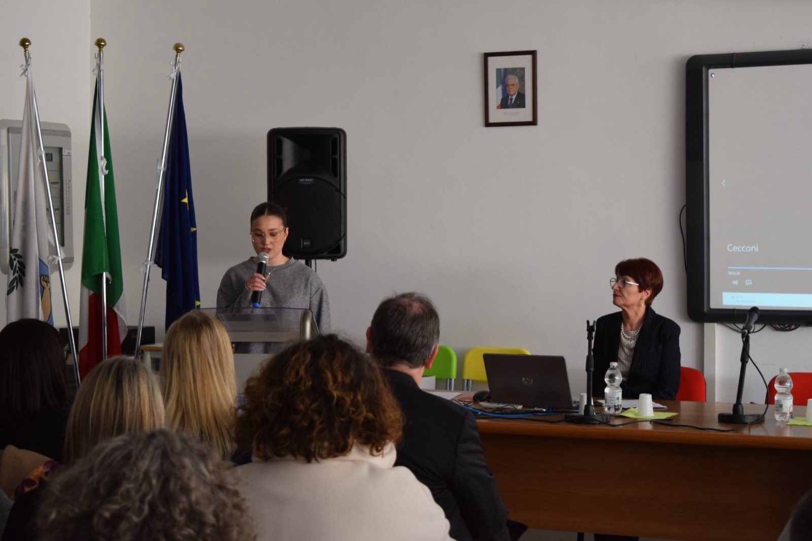
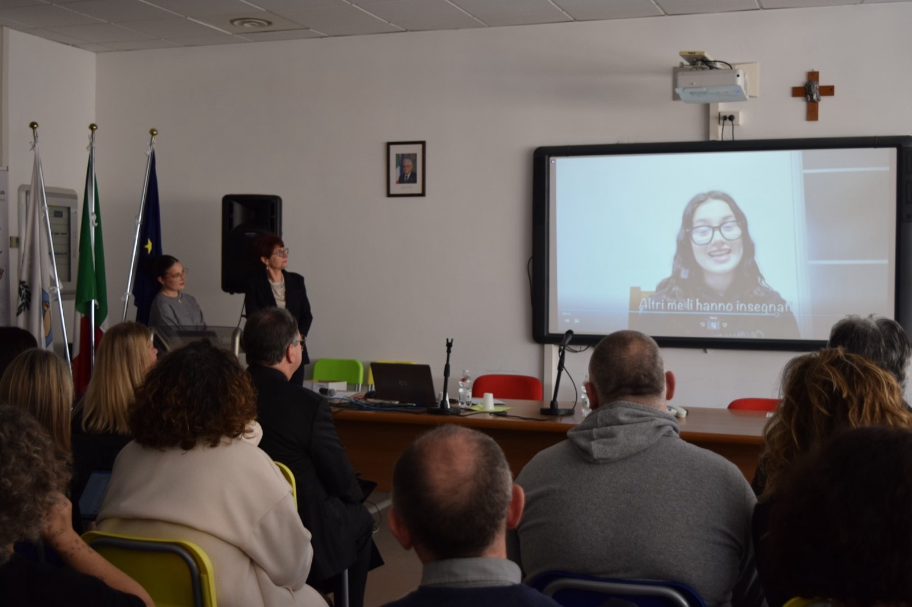
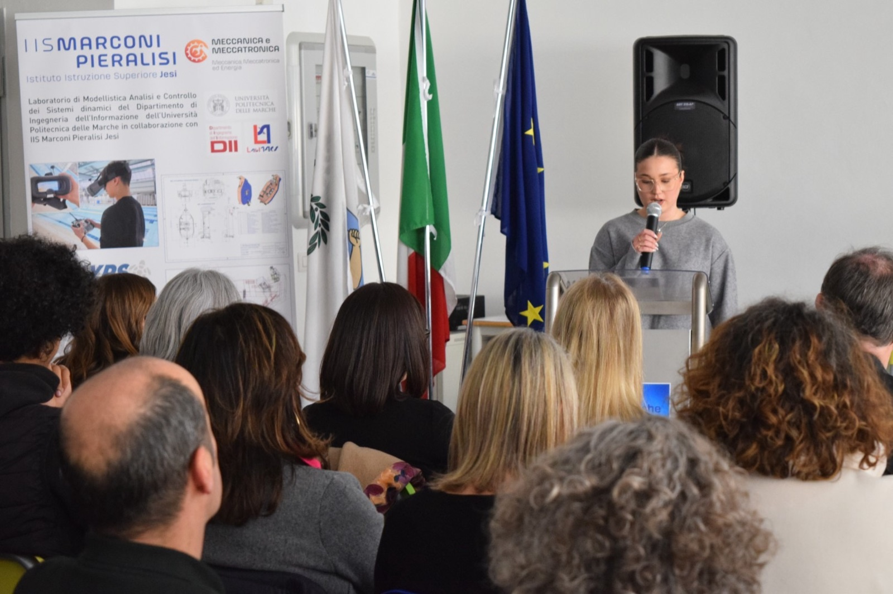
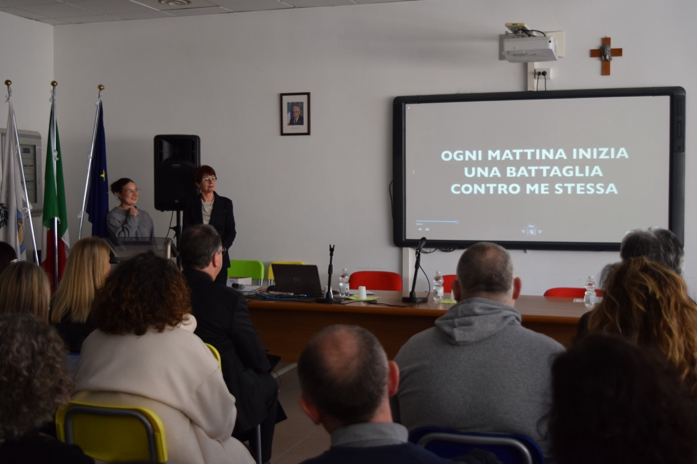
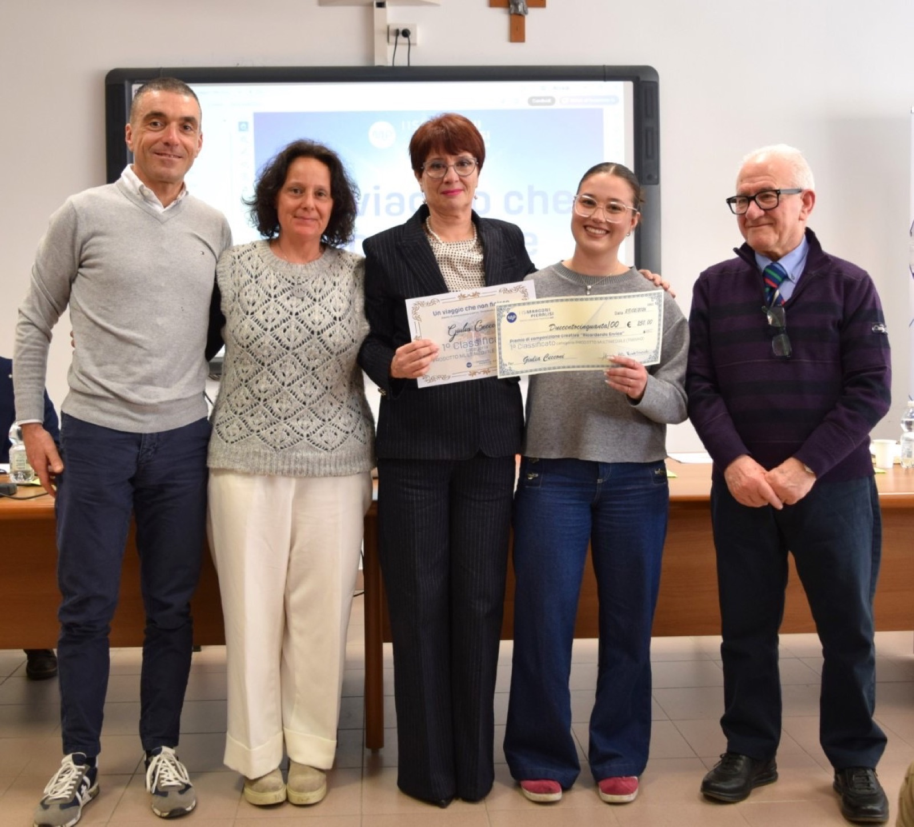

Esame di Stato — il mio capolavoro
Capolavoro
«Un viaggio che non finisce» — un video sulla battaglia, spesso invisibile, contro se stessi e sull'imparare ad accettarsi un passo alla volta.
Guarda il video «Un viaggio che non finisce»
Il mio progetto
Quando ho iniziato a pensare a questo progetto, ho subito capito che non volevo raccontare qualcosa di lontano dalla realtà. Volevo raccontare qualcosa di normale. Quotidiano. Qualcosa che accomuna tante persone, ma di cui non si parla mai abbastanza.
Il mio video parla di una battaglia che spesso non si vede: quella contro se stessi. Ogni mattina ci guardiamo allo specchio e, invece di vedere chi siamo, vediamo ciò che non ci piace. A volte il giudizio più duro non arriva dagli altri, ma dalla nostra stessa voce.
Ho scelto di farlo da sola, senza inserire altre persone nel video, proprio per sottolineare che questo è un viaggio interiore. Un viaggio fatto di piccoli gesti: scegliere cosa indossare, cosa mangiare, come guardarsi. Singolarmente possono sembrare cose banali, ma quando si sommano diventano qualcosa di molto più grande.
Con questo lavoro non volevo dare una soluzione. Volevo semplicemente mostrare una realtà. Far capire che dietro azioni apparentemente normali possono nascondersi pensieri e insicurezze che tanti ragazzi vivono ogni giorno.
Il titolo “Un viaggio che non finisce” rappresenta bene quello che ho voluto raccontare. Crescere non significa diventare perfetti, ma imparare ad accettarsi un passo alla volta. È un percorso continuo, fatto di cadute e ripartenze.
Alcuni fotogrammi




